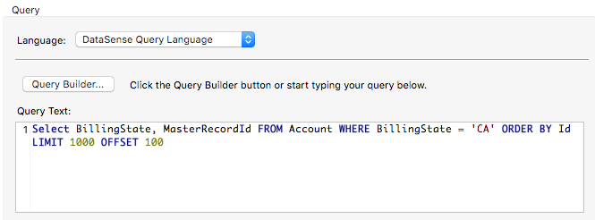

DataSense Query Editor
The Query Editor in Studio allows you to query and retrieve complex data structures that you can use when designing your application. Using DataSense on an Anypoint Connector which supports query functionality, the Query Editor can automatically acquire metadata from remote application, discovering which data types and fields are available to query. The Query Editor displays the available data types and fields in a graphical menu. You select the ones you want to query.
Alternatively, if you are familiar with the remote application you want to access, you can enter your query directly in the remote application’s native query language.
The Query Editor also allows you to:
-
Filter your queries using conditional, arithmetic and boolean operators
-
Sort the results of your search
-
Define an offset starting point for your results
-
Limit the maximum number of results
Using the Query Editor in conjunction DataSense’s perceptive flow design facilitates designing and building a SaaS integration flow. You create complex mappings by placing a DataWeave transformer before or after a connector in your flow.
Assumptions
This document assumes that you are familiar with the Visual Editor in Anypoint Studio, as well as the Anypoint Connectors, in particular the Salesforce cloud connector used in the example queries. This document also references Connectors, Global Elements, and DataSense. To learn more about developing with Mule’s graphical user interface, review Getting Started with Anypoint Studio.
Using the Query Editor
The table below lists the Anypoint Connectors which support Query Editor functionality. (Additionally, you can use the Query Editor with any custom-built connector which supports the query functionality.)
| Connector supports query editor | Bundled with Studio |
|---|---|
Marketo |
|
Microsoft Dynamics CRM (on Demand) |
|
Microsoft Dynamics CRM (on Premise) |
|
NetSuite |
|
QuickBooks |
|
Salesforce |
✔ |
Zuora |
Learn how to add connectors to your instance of Anypoint Studio.
Accessing the Query Editor
-
To access the Query Editor, add a connector to your flow, then access its Properties Editor.
-
Set the value of the Operations field to
Query. -
Use the drop-down menu to select a value for Language (refer to Choosing a Query Language below).
-
Enter your query text directly in the Query Text field, or click the Query Builder… button to build your query using the graphical editor. Refer to the Exploring the Query Builder section for details.
Choosing a Query Language
Using the Query Editor, you have the option to select the language with which you wish to construct your query:
-
DataSense Query Language allows you to perform queries using SQL elements and syntax. Using the DataSense query language, you can use the Query Editor’s graphical interface for almost all operations.
-
Native Query Language refers to language employed by a particular application. The Query Editor allows you to enter your query directly in native query language; however, you cannot be able to use the graphical Query Editor interface.
The following characteristics and requirements of the DataSense and Native query languages correspond to each option.
DataSense Query Language (DSQL)
The Query Editor retrieves available object types and fields, then lists them in a menu for you to select and filter. You can build your query using a graphical user interface, shown below. Within the connector in your flow, you need to reference a Global Element with DataSense enabled.
Native Query Language (NQL)
You enter your query in the Query Editor’s search box, using a simple SQL-like query language. You must know the language and exact names of the data types and fields you wish to query.
Query Language Translation*
If you write a query in DataSense query language, you can use the drop-down language selector to switch to Native Query Language to automatically translate DSQL into NQL.
Note that query language translation is "one-way", meaning you can translate DSQL to NQL, but not NQL to DSQL.
Exploring the Query Builder
This section offers detailed information about each part of the query builder and how to use the fields to construct a query.
| Number | Description | ||||||||||||||
|---|---|---|---|---|---|---|---|---|---|---|---|---|---|---|---|
1 |
Object Types pane and filter box. Displays all available object types. To find and select an object, manually scroll through the objects displayed, or type a string in the filter box to display only those objects whose names contain the string. Bear in mind that:
|
||||||||||||||
2 |
Fields pane. Displays all fields available for the selected object type (or blank if no object type is selected). To find and select a field, manually scroll through the fields displayed, or type a string in the filter box to display only those fields whose names contain the string. You can select multiple fields, or you can select all fields using the checkbox at left of Fields filter field. Where applicable, the Query Builder supports nested fields, so that you can select subfields to include in your query. |
||||||||||||||
3 |
Filter section.
|
||||||||||||||
4 |
Field selector for filter. Click the drop-down menu to select any of the fields available for the selected object. The filter applies only to that field. |
||||||||||||||
5 |
Operator selector for filter. Click to select any of the following operators:
|
||||||||||||||
6 |
Operator value input box. |
||||||||||||||
7 |
Filter remove button. |
||||||||||||||
8 |
Add Filter button. |
||||||||||||||
9 |
Field selector for the Order By option. |
||||||||||||||
10 |
Field selector for the Direction in which you want to order results: Ascending or Descending. |
||||||||||||||
11 |
Limit input field. |
||||||||||||||
12 |
Offset input field. |
Example
This section demonstrates how to use the Query Editor in the context of a use case example. In this case, the example application makes use of a a Salesforce connector to integrate with Salesforce. To use the Query Builder in such an application, one must complete the following macro steps, outlined in more detail below.
-
Create a Salesforce Global Element.
-
Add a Salesforce connector to the flow; configure it to reference the global Salesforce element.
-
Access the Query Editor.
-
Build a query.
Creating a Salesforce Global Element
-
In the Global Elements tab, create and configure a Salesforce global element.
-
Include valid Username, Password, and Security Token.
-
Click OK to save your global element.
When you enable DataSense in the Salesforce global element, Studio automatically attempts to retrieve Salesforce metadata using the user credentials you supply. If the user credentials are invalid, the retrieve operation fails and you cannot create your global element.
Adding a Salesforce Connector
-
Add a Salesforce Connector to your Mule flow.
-
Configure the connector to reference the global Salesforce connector you just created, and set the Operation to `Query `.
Accessing the Query Editor and Building a Query
-
In the Properties Editor of the Salesforce connector, use the drop-down to select the Language you wish to use. In the context of this example, keep the default value, DataSense Query Language. (The Using the Native Query Language describes an example of a query built using Salesforce’s native query language.)
-
If you wish, write your query directly in to the Query Text input box. For the purpose of this example, click the Query Builder button to build your query with the graphical interface.
-
Select an object type from the list of those available in the Types pane.
-
When you select an object, the Fields pane displays the object’s available fields. Select any number of fields to query.
-
Click Add Filter to create a query filter. You can create multiple filters to operate on available fields, and configure sorting, offset and limits for query results. Refer to Exploring the Query Builder section above for more detail.
-
After you have defined your query, click OK. The Query Editor saves, then displays your query in the Query Text field in the Properties Editor.
 -
At this point, your query is fully defined. If you wish to modify it, just click the Query Builder button to change whatever you need. To modify your query, you can also edit it directly in the Query Text field. The Query Editor incorporates any additional fields, filters or clauses you enter; clicking Query Builder again displays the Query Builder window with your changes added.
|
Due to the complexity of graphical representation, the graphical Query Builder cannot display the
|
Using the Native Query Language
To use the remote application’s native query language (in this case, the Salesforce Object Query Language ), select Native Query Language in the Language drop-down menu, then enter your query in the Query Text input field. The statement below selects the fields AccountID, Email, FirstName, and LastName from all objects of type Contact whose field Employee_Still_With_Company_c is marked TRUE.
SELECT AccountId,Email,FirstName,LastName FROM Contact WHERE Employee_Still_With_Company__c = TRUE